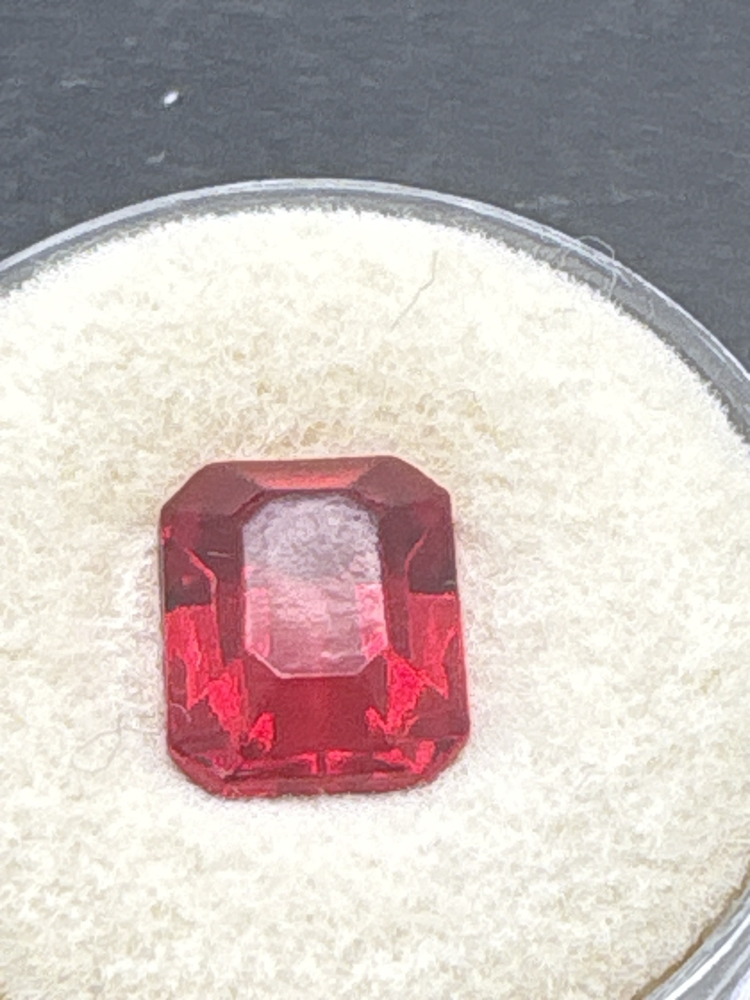

The Gem Drawer › No. 140

A saturated red emerald-cut stone; not offered as ruby.
| Catalogue no. | #140 |
|---|---|
| As labeled | UNIDENTIFIED - vivid red emerald/rectangular step-cut stone (no label; visual ID only, NOT confirmed as ruby - see notes) |
| Shape / cut | Emerald / rectangular step cut |
| Weight | Not recorded |
| Measurements | Not recorded |
| Colour | Vivid, saturated red |
| Clarity / condition | Not recorded |
Interested in this stone, or in the collection as a whole? Terry VanWormer can answer questions about it.
Click here to inquireor email Terry directly at maxrebo34@gmail.com